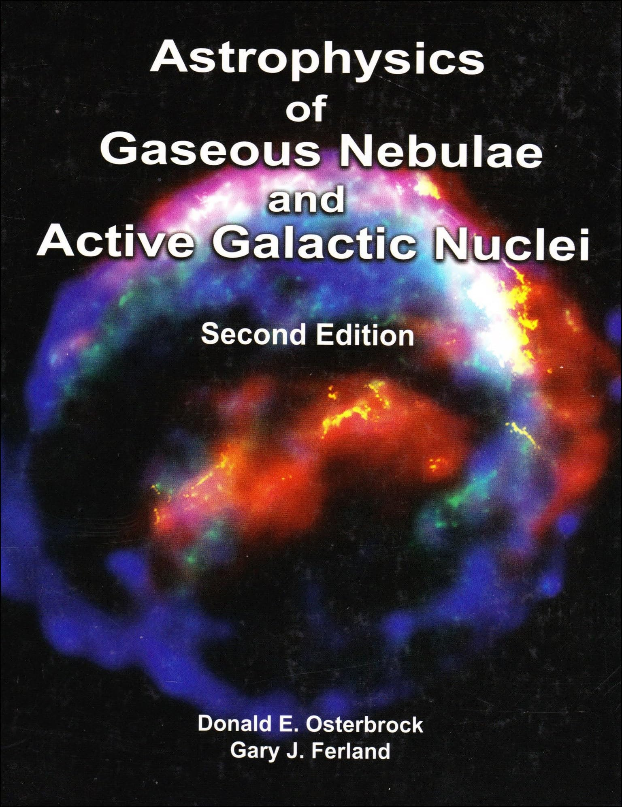

Skip to book introduction
Second edition
Astrophysics of
Gaseous Nebulae
and Active
Galactic Nuclei
Donald E. Osterbrock & Gary J. Ferland
menu_book
Read the web book
arrow_forward
Buy the authorized edition
arrow_forward
AGN
3
Independent non-commercial study edition ·
Citation
